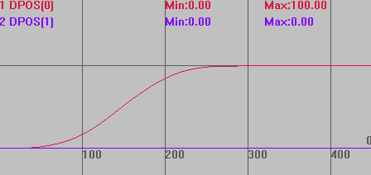
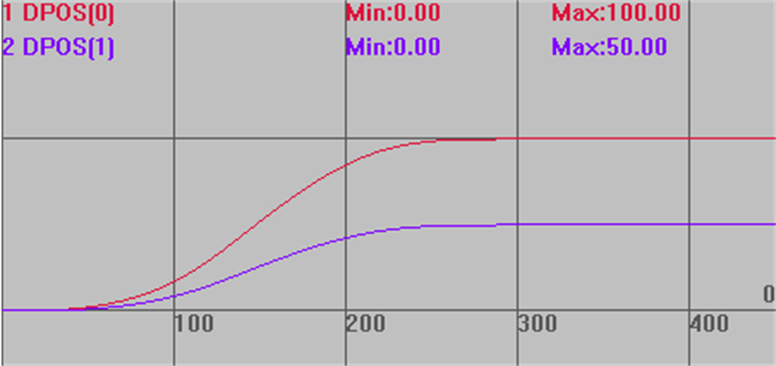
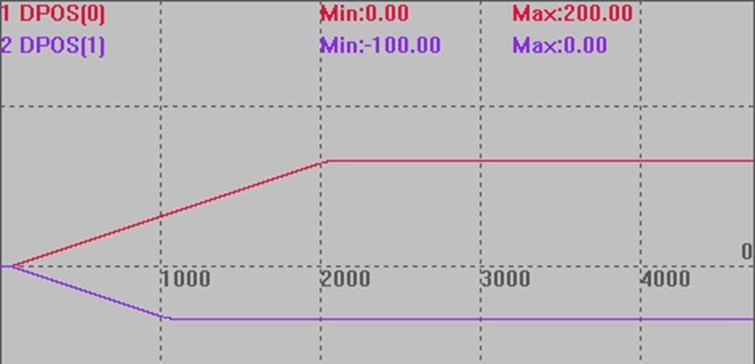
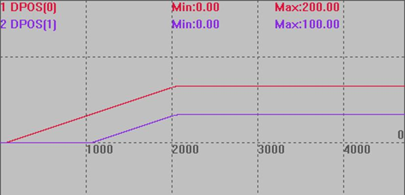
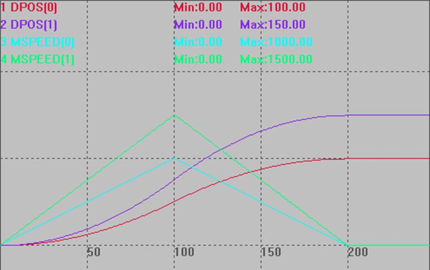
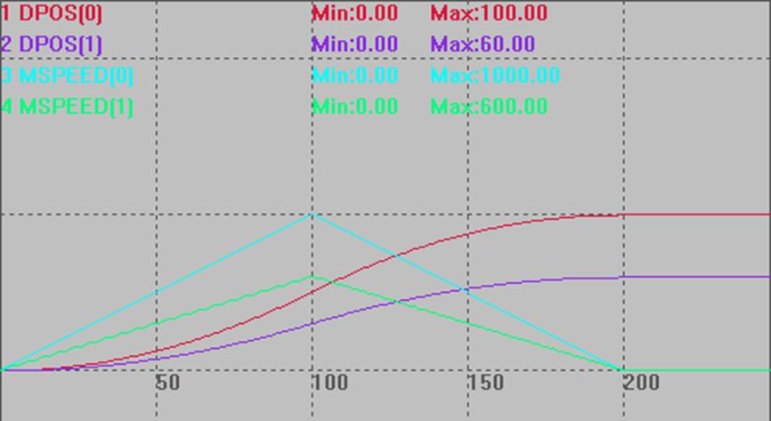
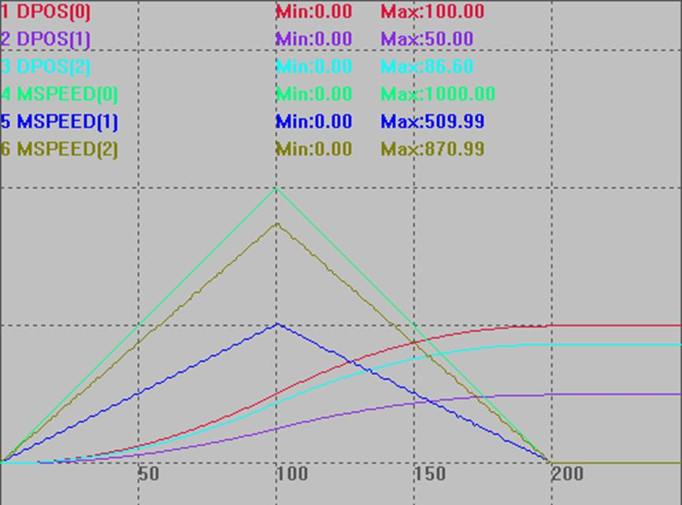

|
类型 |
单轴运动指令 |
|
描述 |
运动叠加，把一个轴的运动叠加到另一个轴。 叠加后，被叠加轴不要用绝对运动指令调用运动。可能会导致位置不对。 ADDAX指令叠加的是脉冲个数，而不是设置的units单位。
转换关系：叠加轴运动距离*叠加轴UNITS/被叠加轴UNITS=被叠加轴运动距离。 假设轴A的UNITS是100，轴B的UNITS是50，叠加轴运动100 把轴A的运动叠加到轴B，此时轴A显示运动了100，轴B运动了100*100/50=200。 把轴B的运动叠加到轴A，此时轴B显示运动了100，轴A运动了100*50/100=50。
轴之间不能相互同时叠加，A叠加到B后，B不能再叠加到A。 支持串联叠加，A运动叠加到B，B在叠加到C。 支持并联叠加，A运动同时叠加到B、C。 叠加时速度从被叠加轴开始变化，加减速按照叠加轴加减速及两轴units比例确定。 ADDAX在轴MTYPE为FRAME或REFRAME的时候不起作用。 对于运行速度较慢的控制器，需在轴叠加后延时一个周期，防止出现未完全叠加就开始运动带来的精度误差 |
|
语法 |
叠加：ADDAX(叠加轴号) AXIS(被叠加轴号) 取消叠加：ADDAX(-1) AXIS(被叠加轴号)
4系列及以上控制器，20220728固件增加叠加选项： BASE(destaxis) ADDAX(srcaxis ,[ imode], [para]) destaxis：叠加的目标轴号 srcaxis：叠加的源轴轴号 imode：叠加模式 0：缺省值, 单轴叠加，兼容以前的直接脉冲个数叠加 1：单轴叠加, 支持比例调整 ADDAX(srcaxis , 1, ratio) ratio：比例值，支持浮点数，目标轴距离 = 源轴距离 * ratio. 2：单轴叠加，支持齿轮比调整 ADDAX(srcaxis , 2, ratioin, rationout) ratioin：分子，整数，支持负数 rationout：分母，正整数. 目标轴距离 = 源轴距离 * ratioin / rationout. 3：单轴叠加到两个轴，支持角度调整 BASE(destaxis1, destaxis2) ADDAX(srcaxis , 3, angle) destaxis：叠加的目标轴1，2 angle：角度, 弧度值, 目标轴1距离 = 源轴距离 * cos(angle). 目标轴2距离 = 源轴距离 * sin(angle). 注意:取消要分别取消两个轴ADDAX(-1, 3, 0)或ADDAX(-1) AXIS(被叠加轴号) 4：振镜联动叠加，利用振镜轴来补偿平台轴的偏差，必须方向和当量一致，不一致需要齿轮比调整，或是振镜矫正加比例。 BASE(destaxis, destaxis2) ADDAX(srcaxis , 4, srcaxis2) 利用srcaxis来补偿destaxis, srcaxis2来补偿destaxis2. 注意:取消也要两个轴取消ADDAX(-1 , 4, -1) 或ADDAX(-1) AXIS(被叠加轴号) 5：振镜联动叠加, 平台轴反向叠加到振镜轴, 必须方向和当量一致, 不一致需要齿轮比调整, 或是振镜矫正加比例. BASE(destaxis, destaxis2) ADDAX(srcaxis , 5, srcaxis2) srcaxis反向叠加到destaxis, srcaxis2反向叠加到destaxis2. 注意:取消也要两个轴取消ADDAX(-1 , 5, -1)或ADDAX(-1) AXIS(被叠加轴号) |
|
适用控制器 |
通用 |
|
例子 |
例一 BASE(0,1) ATYPE=1,1 UNITS=100,200 '轴0 UNITS设100，轴1 UNITS设200 SPEED=1000,1000 '速度设1000 ACCEL=10000,10000 '加速度10000 DECEL=10000,10000 '减速度10000 ADDAX(0) AXIS(1) '轴0的运动叠加到轴1，按脉冲个数叠加 DELAY(1) '根据控制器周期设置延时时间 DPOS=0,0 '设置位置为0,0 TRIGGER '自动触发示波器 MOVE(100) '轴0运动100，此时轴1运动100*100/200=50 '要考虑到两轴UNITS的转换 WAIT IDLE '等待运行完 ADDAX(-1) AXIS(1) '取消叠加
不使用叠加指令的运动轨迹（无特殊说明图中示波器曲线均未设置偏移） DPOS(0)垂直刻度100 DPOS(1)垂直刻度100 
叠加指令使用后的运动轨迹 DPOS(0)垂直刻度100 DPOS(1)垂直刻度100 
例二 RAPIDSTOP(2) WAIT IDLE BASE(0,1) DPOS=0,0 ATYPE=1,1 UNITS=100,100 '脉冲比例为1:1 SPEED=100,100 ACCEL=1000,1000 DECEL=1000,1000 ADDAX(0) AXIS(1) '轴0的运动叠加到轴1 DELAY(1) '根据控制器周期设置延时时间 TRIGGER MOVE(200) AXIS(0) MOVE(-100) AXIS(1) WAIT IDLE '等待运行完 ADDAX(-1) AXIS(1) '取消叠加
叠加前：  叠加后：后续给轴0发运动指令，轴0轴1一起运动，仍保持叠加，直到ADDAX(-1) AXIS(1)取消叠加。 
例三 模式1 BASE(0,1) '选择轴号 UNITS = 100,100 DPOS =0,0 TRIGGER BASE(1) '选择被叠加轴 ADDAX(0,1,1.5) AXIS(1) '模式1叠加，轴0的运动叠加到轴1，比例1.5 DELAY(1) '根据控制器周期设置延时时间 MOVE(100) AXIS(0) WAIT UNTIL IDLE(0) AND IDLE(1) ?"轴1叠加轴号" ADDAX_AXIS(1) ADDAX(-1) AXIS(1) '取消叠加 脉冲当量相同，轴1运动距离为轴0的1.5倍。 
例四 模式2 BASE(0,1) '选择轴号 UNITS = 100,100 DPOS =0,0 TRIGGER BASE(1) '选择被叠加轴 ADDAX(0,2,3,5) AXIS(1) '模式2叠加，轴0的运动叠加到轴1 DELAY(1) '根据控制器周期设置延时时间 MOVE(100) AXIS(0) WAIT UNTIL IDLE(0) AND IDLE(1) ?"轴1叠加轴号" ADDAX_AXIS(1) ADDAX(-1) AXIS(1) '取消叠加 END 脉冲当量相同，轴1运动距离为轴0的3/5倍。 
例五 模式3 BASE(0,1,2) '选择轴号 UNITS = 100,100,100 DPOS =0,0,0 BASE(1,2) '叠加目标轴，轴号1，2 TRIGGER ADDAX(0,3,PI/3) '模式3叠加，轴0的运动叠加到轴1和轴2 DELAY(1) '根据控制器周期设置延时时间 MOVE(100) AXIS(0) WAIT UNTIL IDLE(0) AND IDLE(1) AND IDLE(2) DIM pos1,pos2 pos1=100 *cos(PI/3) pos2=100 *sin(PI/3) ?"轴0目标位置", 100, "实际位置" ENDMOVE(0) ?"轴1目标位置", pos1, "实际位置" ENDMOVE(1) ?"轴2目标位置", pos2, "实际位置" ENDMOVE(2) ?"轴1叠加轴号" ADDAX_AXIS(1) ?"轴2叠加轴号"ADDAX_AXIS(2) ADDAX(-1) AXIS(1) '取消叠加 ADDAX(-1) AXIS(2)  |